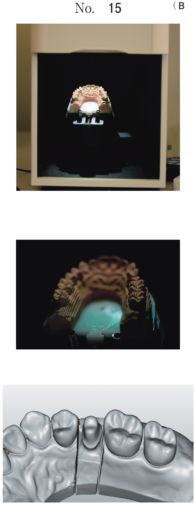
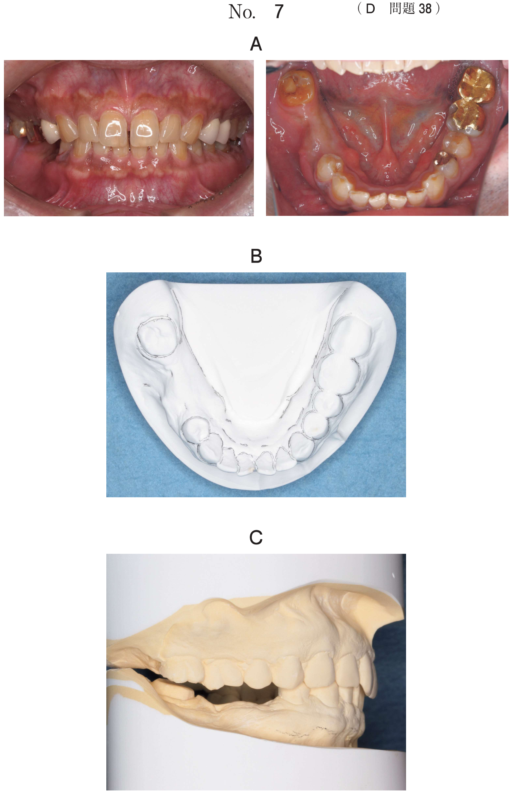
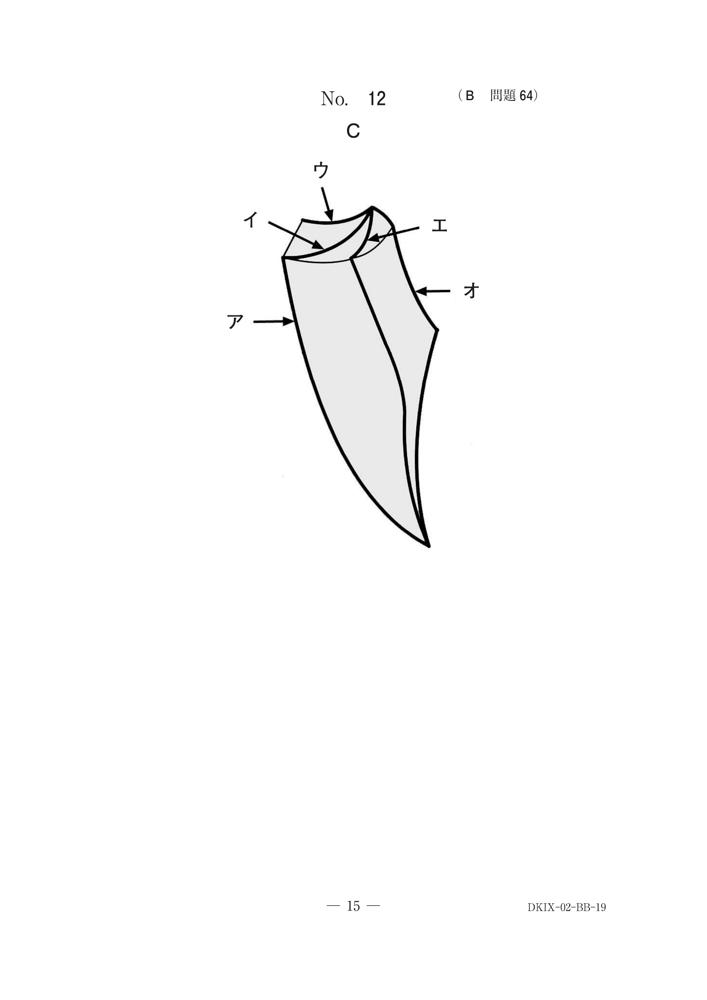
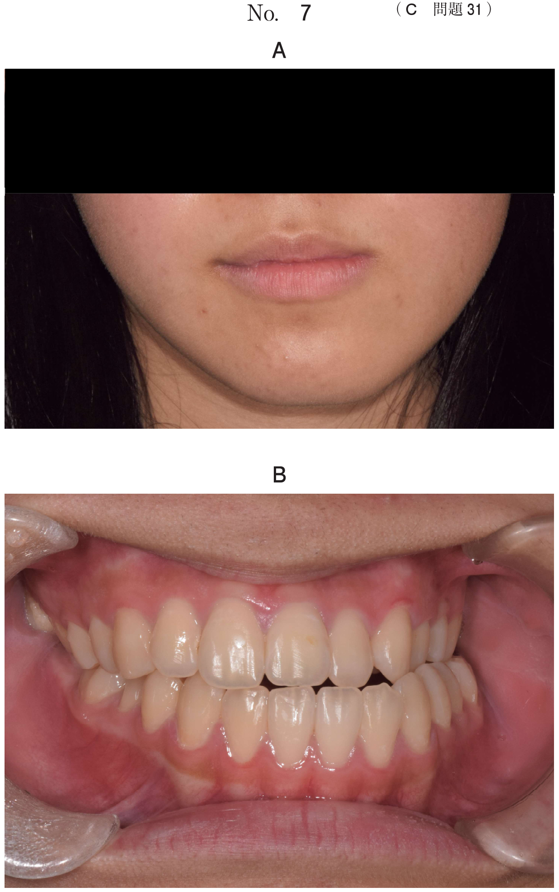

萌出異常・過剰歯
萌出異常の分類
乳歯から永久歯への交換期において、萌出スペース（特にリーウェイスペース）が確保され、正しい萌出順序で交換が行われることが重要である。
| 分類 | 種類 |
|---|---|
| 時期の異常 | 早期萌出、萌出遅延 |
| 位置の異常 | 転位、傾斜、埋伏 |
| 数の異常 | 過剰歯、先天欠如 |
萌出遅延
原因
- 歯胚の位置異常
- 嚢胞の形成
- 乳歯の晩期残存
- 萌出スペースの不足
- 過剰歯
- 歯牙腫
- 歯肉の肥厚
- 歯の骨性癒着
- 原因の除去が最優先
- 過剰歯・埋伏歯 → 抜去
- 萌出誘導 → 原因除去後に牽引
過剰歯
正常な歯数より多く存在する歯。上顎正中部に最も多く発生する（正中過剰歯）。
好発部位
| 部位 | 頻度 |
|---|---|
| 上顎正中部（正中過剰歯） | 最も多い |
| 上顎大臼歯部 | 多い |
| 下顎小臼歯部 | 比較的多い |
過剰歯による不正咬合
- 正中離開：正中過剰歯による
- 萌出遅延：埋伏過剰歯が萌出を阻害
- 叢生：スペース不足
- 永久歯の位置異常・傾斜
治療方針
過剰歯が萌出障害や不正咬合の原因となっている場合は、過剰歯の抜去が最優先である。
埋伏歯
種類
| 種類 | 特徴 |
|---|---|
| 水平埋伏 | 歯軸が水平方向 |
| 垂直埋伏 | 歯軸が垂直方向 |
| 逆生埋伏 | 歯冠が上方（逆向き） |
対応
埋伏歯が萌出障害の原因となっている場合は、埋伏歯の抜去後、牽引で対応する。
位置の異常（転位）
下顎側方歯群の萌出順序
下顎側方歯群は 3→4→5 の順で萌出することが多い。
そのため、5（第二小臼歯）の舌側転位が起こりやすい。
先天異常と萌出異常
鎖骨頭蓋異形成症
- 乳歯の晩期残存
- 永久歯の萌出遅延
- 多数の過剰歯
- 埋伏歯
過去問
9歳の女児。前歯部の反対咬合と叢生を主訴として来院した。矯正治療を行うこととした。初診時の口腔内写真（別冊No.24A）、エックス線写真（別冊No.24B）及び歯科用コーンビームCT（別冊No.24C）を別に示す。セファロ分析の結果を図に示す。
まず行うのはどれか。1つ選べ。


b 埋伏過剰歯の抜去
c 上顎前方牽引装置の装着
d 上顎歯列へのブラケットの装着
e 下顎歯列へのブラケットの装着
【解説】X線・CTで埋伏過剰歯が確認された場合、過剰歯の抜去が最優先となる。過剰歯は永久歯の萌出障害の原因となるため、まず除去する。
11歳の男児。上顎前歯の萌出遅延を主訴として来院した。初診時の口腔内写真（別冊No.14A）、エックス線画像（別冊No.14B）及び歯科用コーンビームCT（別冊No.14C）を別に示す。
まず行うべき処置はどれか。1つ選べ。


b 3┘の抜歯
c 4┘の抜歯
d E┘の抜歯後、5┘の牽引
e 1┘の抜歯後、3┘の牽引
【解説】萌出遅延の原因となっている埋伏歯（1┘）を抜去し、その後3┘を牽引して萌出誘導を行う。原因の除去が最優先である。
13歳の女子。歯並びが悪いことを主訴として来院した。初診時の口腔内写真（別冊No.19A）、エックス線画像（別冊No.19B）及び歯科用コーンビーム CT（別冊No.19C）を別に示す。
正しい所見はどれか。2つ選べ。


b └3 の遠心傾斜
c └4 の水平埋伏
d └5 の歯根彎曲
e └7 の萌出遅延
【解説】X線画像から└4の水平埋伏と└5の歯根彎曲を読み取る。画像所見の正確な読み取りが求められる。
12歳の男児。前歯の歯並びが悪いことを主訴として来院した。初診時の口腔内写真（別冊No.14A）とエックス線画像（別冊No.14B）を別に示す。
認められるのはどれか。2つ選べ。


b 埋伏歯
c 癒合歯
d 癒着歯
e 矮小歯
【解説】X線画像から埋伏歯と矮小歯を読み取る。矮小歯は2（上顎側切歯）に多く、空隙歯列の原因となる。